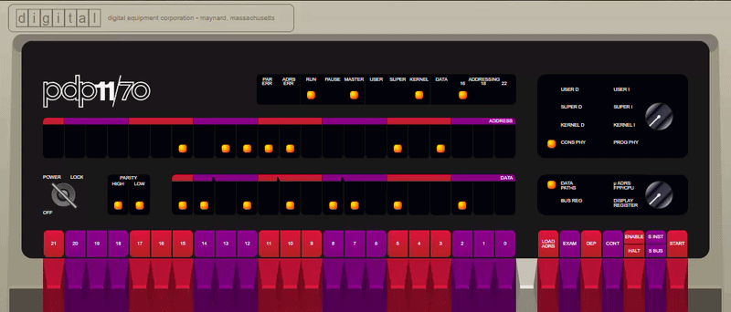

Step into the machine room of 1970s computing — a fully immersive DEC experience, with zero installation and zero configuration.
No plugins. No downloads. No setup. Just open the page and you're standing in front of a PDP‑11.

Screenshots of yaPDP running real guest operating systems — booted inside the emulator through the magic-wand wizard. Click any thumbnail to view it full size.
This is a PDP‑11/70 emulator that just works out of the box — no plugins, no downloads, no configuration. Just open the page and you're standing in front of a DEC minicomputer.
| Feature | Description |
|---|---|
| Authentic Front Panel | Every switch, LED, and rotary knob faithfully recreated. Toggle in a bootstrap loader the way DEC engineers did in the 1970s. |
| Model 33 ASR Teletype | A fully animated Google60-style teletype connected as the operator console — complete with paper printing, keypunch sounds, line-feed whirs and authentic nroff/man overstrike rendering. |
| VT52 Terminal | A DECscope VT52 terminal (TT1:) rendered on canvas, for guest OSes that prefer video terminals. |
| VT11 Display | An optional DEC VT11 vector-graphics display processor on its own green-phosphor CRT page, enabled from the CONFIG page. |
| 16 Guest OSes | Boot Unix V5, 2.11 BSD, Ultrix‑11, RSX‑11M (3.2 & 4.6), RSTS/E (4B‑17 through 10.1), RT‑11, XXDP diagnostics, and more. |
| Persistent Storage | All disk and tape images are preloaded. Changes to disk contents persist in browser storage across sessions. |
| Paper Tape Reader | Load BASIC‑11, ODT‑11, ED‑11, or Lunar Lander from simulated paper tape. |
| Desktop App | The same emulator is packaged as a native offline Tauri desktop application — see the README for the two installer variants. |
PDP‑11 emulators are plentiful today. They span every platform and every level of ambition — from lightweight interpreters to cycle‑accurate recreations. But for all their differences they share the same sore spot: getting one up and running is a struggle. Configuration screens full of cryptic options, an engineer's interface built for utility rather than for the experience, and the eternal hunt for a disk image that actually works with this particular emulator — the part that should be effortless usually turns out to be the hardest.
Solving those problems is necessary, but it is not the whole story. The other half of the equation is what emulation is really about — immersion. The spirit of the era, the hum of the power supply, paper rattling through the teletype, the soft glow of a phosphor screen. We emulate not merely to run old software, but to feel, for a while, what it was like to work with it.
That is exactly what yaPDP sets out to do. It pairs a zero‑configuration, instant start — open the page and you're standing at the console of a PDP‑11/70 — with an authenticity that reaches down to the smallest detail, even the sound: the drone of the machine, the clatter of the Model 33 ASR, the rhythm of the line printer. Not just a faithful emulator. A faithful experience.
As it turns out, rather a lot of people:
I first saw DEC minicomputers as a child at my parents' workplace. The blinking lights, the whir of disk drives, the smell of ozone and paper — it left an impression that never faded.
My real hands‑on encounter came later, when I found myself in front of the Soviet clones of DEC hardware — the SM‑4 and SM‑1420 — running RSX‑11M. And with them came C. The language that lets you feel the machine. It was love at first sight.
That was forty years ago.
I went on to become a professional software developer — starting with low‑level programming, then building bare metal systems programming tools for x86, working on space communication systems and onboard navigation systems, and eventually leading projects of considerable size. But the feeling of powering up an SM‑4 with my own hands, watching the console lights dance, then walking to the next room to sit at a terminal — that stayed with me. I've been trying to bring it back ever since.
I never got to run real UNIX on those machines. The Soviet replicas lived under RSX‑11M, and by the time I understood what UNIX V5 or 2.11 BSD truly meant, the world had already moved to x86 PCs. But decades later, thanks to the incredible work of Paul Nankervis, I can finally open a browser and boot Unix V5, BSD 2.11, Ultrix‑11, RSX‑11M, RSTS/E, RT‑11 — each one a time capsule of computing history.
This project is the result: yaPDP, a fully fledged PDP‑11/70 emulator that runs right in your browser, with an authentic front panel and a connected Model 33 ASR teletype — the operator's console I always dreamed of having next to my desk.
Welcome to the machine.
In a hurry? Use the magic wand button in the top-right corner of the window (it stays on every page except Info) — it does it all in one click: picks a guest OS, reconfigures the machine, reboots it, and types the boot (and login) for you.
Otherwise, go the classic way:
Boot> prompt, type boot rp1 and press ENTER.root (no password).ls, ps -aux, df — or compile a C program with
cc.
| Resource | URL |
|---|---|
| yaPDP emulator (this repo) | pdp11.html |
| Hosted live demo (upstream) | https://paulnank.github.io/pdp11-js/pdp11.html |
| Source code | https://github.com/amesk/yaPDP |
| README | README.md — build instructions, guest OS table, desktop app variants |
| User manual | manual.html — step-by-step user guide for the emulator |
| Original pdp11-js | https://github.com/paulnank/pdp11-js/ |
| Google60 (mass:werk) | https://www.masswerk.at/google60/ |
The native desktop application (Windows x64) is built locally with
npm run desktop:full — it produces NSIS/MSI installers plus a portable executable, either
in a
tiny Minimal variant or a fully-offline Full variant with every disk/tape image bundled.
See the README for details.
Prefer a native app? The same emulator is packaged as an offline desktop application for Windows x64 with Tauri. Two installer variants are available, so you can pick between a tiny download and a fully-offline bundle with every disk/tape image:
| Variant | Ships | Notes |
|---|---|---|
| Minimal | rk0, rk1, bootcode | Small download (~3 MB). All other images are dragged & dropped at runtime. |
| Full | every image — RK/RL/RP/RA disks, TM tapes, all paper tapes | Larger download, but all 16 guest OSes boot offline with zero extra steps. |
Download the latest binaries from the releases page.
This project stands on the shoulders of giants.
Paul wrote the original pdp11-js emulator, which this repository is forked from. His meticulous work — cycle‑accurate CPU emulation, beautifully rendered front panels, and a meticulously curated collection of vintage operating systems — made this project possible.
"I met my core objective — I can now see the RSTS/E console light pattern that I was looking for."
— Paul Nankervis
The Model 33 ASR teletype emulation is adapted from Google60 by Norbert Landsteiner of mass:werk. Google60 is a brilliant simulation of the Google search interface as it would have appeared on a Model 33 ASR Teletype in the 1960s/1970s. Norbert's meticulous implementation — from the 3D keycaps to the paper advance animation and authentic sound effects — brings the teletype to life. This project repurposes his engine as the operator console for the PDP‑11.
Happy emulating!
— Alexei Eskenazi amesk<alexei.eskenazi@gmail.com>
(author and maintainer of yaPDP)
— Fork maintained with love for the DEC era